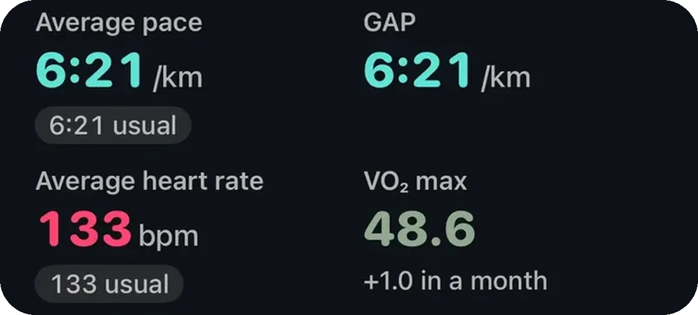
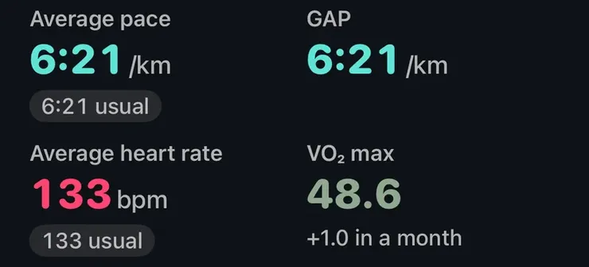

Alapok · Fitnesz

Az Apple Watch nem méri a VO2 maxodat, hanem becsli. A becslést, amit az Apple kardiofitnesznek (Cardio Fitness) hív, abból számolja, hogyan reagál a pulzusod a tempóra szabadtéri sétán, futáson és túrán. Független laborösszevetésekben átlagosan nagyjából 13–16 százalékkal tért el, többnyire lefelé, és sokkal jobban mutatja, hogy fittebb leszel-e, mint a pontos értékedet. Hetekig, hónapokig tartó, egyenletes állóképességi edzés emeli.
Hogy mi maga a VO2 max, arról a VO2 max az órán című jegyzet szól (angolul). Ez az útmutató az Apple Watch számáról szól.
Laborban a VO2 maxot maszkkal mérik, miközben kimerülésig futsz vagy tekersz, milliliter oxigén per testsúlykilogramm per percben (ml/kg/perc). Az Apple fehér könyve szerint az óra ehelyett a pulzusodat veti össze a sebességeddel egy Szabadtéri séta, Szabadtéri futás vagy Túrázás edzés alatt, és ebből a nem maximális terhelésből vetíti ki, hol lenne a plafonod, az Egészség appban megadott korod, nemed, testsúlyod és magasságod alapján.
A feltételek szigorúak. A terepnek nagyjából síknak kell lennie (5% alatti emelkedő vagy lejtő), a GPS- és pulzusjelnek jónak, és annyira meg kell dolgoznod, hogy a pulzusod nagyjából harmadáig emelkedjen a nyugalmi és a maximális között. A beltéri edzések nem számítanak, az első megfelelő edzés még nem ad értéket, és az Apple támogatási oldala szerint a becslés 14 és 65 ml/kg/perc között mozoghat.
20 éves kortól az Egészség app megmutatja, melyik szintbe esik a becslésed a korod és nemed szerint. Bekapcsolhatod az alacsony kardiofitneszről szóló értesítést is. Ennek küszöbe 20 és 59 év között a FRIEND laborregiszter legalsó ötöde, 60 év fölött pedig férfiaknál 18, nőknél 15 ml/kg/perc, és csak akkor jelez, ha az érték tartósan alacsony.
Az Apple 221 olyan emberen ellenőrizte az algoritmust, akiknek az adatai nem kerültek a fejlesztésbe. Az átlagos eltérés 1,4 ml/kg/perc volt, nagyjából 4,7-es szórással mindkét irányba. Az Apple viszonyítási értéke viszont maga is nem maximális laborteszt alapján volt kivetítve, nem kimerülésig tartó tesztből.
Az óra kevesebbet mutat, de veled együtt emelkedik.
A kimerülésig tartó tesztekkel dolgozó független vizsgálatok nagyobb eltérést találtak. Caserman és munkatársai (2024) 19 felnőttnél vetették össze az Apple Watch Series 7-et egy laboratóriumi kerékpáros teszttel: az óra átlagosan kevesebbet mutatott (41,4 a 45,9 ml/kg/perccel szemben), átlagosan körülbelül 16%-kal tévedett, és a kevésbé edzetteknél inkább túl-, a nagyon edzetteknél alulbecsült. Lambe és munkatársai (2025) 28 felnőttnél, többnyire Series 9 és Ultra 2 órával, futópados teszthez mérték: az óra átlagosan 6,1 ml/kg/perccel kevesebbet mutatott, körülbelül 13%-os eltéréssel, és egyeseknél bőven 10 pont fölött tévedett.
A szám tehát akár egy szinttel is mellétrafálhat a laborértékhez képest. Amiben megbízhatsz, az a saját trended, rendszeres szabadtéri edzésekkel táplálva.
Az Apple szintjei a FRIEND nevű amerikai futópados tesztregiszterből származnak (Kaminsky és munkatársai, 2015). A regiszter középértéke (50. percentilis), ml/kg/percben:
A középérték fölött fittebb vagy a veled egykorú, azonos nemű tesztelők felénél, és a regiszterbe olyanok kerültek, akik maguk jelentkeztek tesztre, nem a teljes népesség. Mivel az óra általában a futópados teszt alatt marad, a középérték alatti érték a valóságban akár elérheti azt.
Az Apple fehér könyve sorolja, mi rontja a becslést:
Lassan is mozdul, ez a működéséből fakad: az edzés hetek alatt változtat a VO2 maxon, az óra pedig csak megfelelő edzésekből frissít. Ha főleg tekersz, úszol vagy súlyzózol, a szám hetekig állhat. Ez annak a jele, hogy az óra mit nem lát, nem annak, hogy a fittséged megállt.
Milanović és munkatársai (2015) 28 kontrollált vizsgálatot összesítettek 18 és 45 év közötti egészséges felnőttekkel. Mozgás nélküli kontrollhoz képest a folyamatos állóképességi edzés körülbelül 4,9, az intervallum edzés körülbelül 5,5 ml/kg/perccel emelte a VO2 maxot, az intervallumok kis előnnyel. A hosszabb programok többet hoztak.
A VO2 max hetek és hónapok alatt épül, ezért a rendszeresség többet ér bármelyik nagy hétnél.
A kardiofitnesz az egyik erősebb hosszú távú egészségjelző. Kodama és munkatársai (2009) 33 vizsgálatot összesítettek több mint 100 000 egészséges felnőttel: minden további MET fittség (3,5 ml/kg/perc) körülbelül 13%-kal alacsonyabb összhalálozással és 15%-kal kevesebb szív- és érrendszeri eseménnyel járt együtt. Mandsager és munkatársai (2018) 122 007 embert követtek futópados teszt után, és azt találták, hogy a magasabb fittség végig alacsonyabb halálozással járt, nem volt olyan pont, ahol a haszon megállt. Ezek nagy csoportokban látott összefüggések, nem egy ember jóslata, és a különbség jó része a legkevésbé fitt csoport és az eggyel fölötte lévő között van.

VO₂ max egy futásonSzabadtéri futásnál vagy sétánál az Aera kiírja, milyen becslést mentett aznap az Apple Health, és mennyit mozdult a nagyjából egy hónappal korábbi értékhez képest.
Az Aera, iPhone-ra és Apple Watch-ra
Az Aera beolvassa az Apple Watch által az Apple Health-be mentett kardiofitnesz-becsléseket, és hozzád méri őket, nem egyetlen naphoz. A főképernyőn akkor jelenik meg VO₂max-kártya, ha a legutóbbi becslésed eltávolodik az elmúlt hat hét szokásos értékétől, vagy ha gyakran megnyitod. Azt írja: Tipikus, A szokásos alatt vagy Jóval alacsonyabb (illetve ugyanezt felfelé), és amíg nincs öt becslés, azt írja ki, hogy Alapérték készül, és nem találgat. Ha még kevés a becslés, a lapja jelzi, hogy a trend a szabadtéri edzésekből telik meg.
A Fitnesz lapon a Haladás alatt A fittséged a kardiofittségedet ahhoz méri, ahol tizenkét hete álltál. Megvárja, hogy legyen hat becslés legalább négy hétre elosztva, és csak az 1,5 ml/kg/perces vagy nagyobb változást nevezi Fittebbnek vagy Csökkennek, a kisebb Stabil marad. Alatta egy Alacsonytól Magasig tartó szint mutatja, hol áll a becslésed a veled egykorú, azonos nemű emberek között a FRIEND-regiszterben, figyelembe véve, hogy az óra nagyjából 10%-kal a futópados teszt alatt mér. A Field Guide minden lépést elmagyaráz, azt is, miért tévedhet a szint egy sávot, és miért mossák el a becslést az emelkedők, a hőség és a gyógyszerek. Nincs fiók, az egészségadatokat az iPhone-od számolja ki. Ezek ingyenesek. Az egész alkalmazás magyarul van.
Az Aera nem orvostechnikai eszköz.
Becslés, nem mérés. Az Apple saját vizsgálatában az átlagos eltérés körülbelül 1,4 ml/kg/perc volt, független laborvizsgálatokban viszont az óra átlagosan 4–6 ml/kg/perccel kevesebbet mutatott a valódi tesztnél, egyeseknél ennél többel is. A saját trendedet jobban követi, mint ahogy egy laborértéket eltalál.
Kortól és nemtől függ. A futópados teszteket gyűjtő FRIEND-regiszterben a középérték húszas éveikben járó férfiaknál nagyjából 48, nőknél 38 ml/kg/perc, ötvenes éveikben körülbelül 33 és 23. Az Apple Watch általában valamivel kevesebbet mutat egy futópados tesztnél, ezért az Egészség app szintjét durva irányjelzőnek vedd, a valódi jel a saját trended.
Lehet, hogy tényleg alacsony, de lehet, hogy csak alulbecsült. A hőség, az emelkedők, a gyenge GPS, a cipelt teher, a koffein, a kiszáradás és az Egészség appban rosszul megadott kor, testsúly vagy magasság mind lefelé húzhatják. A pulzuscsökkentő gyógyszerek fölfelé tolják, ha nem adod meg őket. A legtisztább becslést több sík terepen, egyenletes tempóban tett szabadtéri séta vagy futás adja.
Rendszeres állóképességi mozgással, hetekig, hónapokig kitartva. Kontrollált vizsgálatok metaanalízise szerint a folyamatos állóképességi edzés körülbelül 4,9, az intervallum edzés körülbelül 5,5 ml/kg/perccel emelte a VO2 maxot. A legtöbb hét állhat egyenletes, könnyű-közepes kardióból, és ha már megvan az alap, jöhet heti egy-két keményebb intervallum.
Kapcsolódó jegyzetek (angolul): VO2 max egy órán · mi a zóna 2 edzés · mik az intervallumok · miért emeli a hőség a pulzust · mit nem tud mérni egy okosóra
Kapcsolódó útmutató: Apple Watch HRV: mennyi a normális, és miért alacsony az enyém?
 Vagy olvasd be az iPhone-oddal
Vagy olvasd be az iPhone-oddalIngyen kipróbálhatod, regisztráció nélkül. Azzal az órával is megy, amit most hordasz.